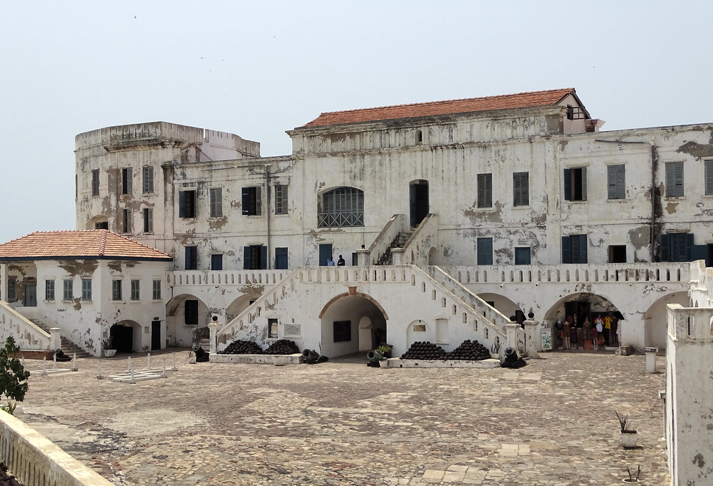

History of Ghana
Ghana is named after an ancient gold-trading empire that flourished in the West African interior between the 4th and 10th centuries, when the trans-Sahara caravan route linked the region to the Mediterranean via Timbuktu. However, prior to independence on 6 March 1957, the territory was known as Gold Coast, a reference to the large volumes of gold that were mined in the interior and exported by sea following the arrival of the Portuguese in the 15th century. Over the centuries that followed, Gold Coast became the site of several dozen castles, built by various European empires to protect their trade in gold and slaves.In 1874, the Gold Coast formally became a British colony, and the territory reached its present extent after WWI, when parts of what were formerly German Togoland were annexed to its eastern border to form present-day Volta Region. In 1957, the newly independent state of Ghana became the first black African country to be granted independence. Under President Kwame Nkrumah, the country underwent rapid development. A key founder of the Organisation of African Unity (now the African Union), Nkrumah also played a leading role in international affairs, by supporting the struggle for liberation in other African colonies. Nkrumah's dictatorial tendencies resulted in a 1966 coup, which was the first of several military takeovers during a 15-year period of economic and political instability that culminated in the coup led by Flight Lieutenant Jerry Rawlings on 31 December 1981. Under Rawlings's uncompromising leadership, the decade that followed was marked by sustained economic growth, but also by high levels of dissidence and repression. In 1991, Rawlings bowed to popular pressure and enacted a new constitution returning the country to civilian rule. Rawlings won the first democratic election in 1992 and was re-elected in 1996. The election of December 2000, won by John Kufuor, led to the first transfer of power from one elected leader to another in Ghanaian history. and the country's democracy has continued to go from strength to strength. Did you know? Accra, the capital, is known for its carpentry workshops, where usually-shaped coffins including cars, mobile phones and shoes are created for clients. The cedi, the country's currency, is named after a sea shell that was once used as currency. In 1991 Ghanaian Ferdie Ato Adobo set the world record for running 100m backwards, with a time of 13.6 seconds. click here for more
Historic Sites
1. Cape Coast
This castle in Cape Coast, Ghana—once known as the Gold Coast of West Africa—was one of around 40 “slave castles” that served as prisons and embarkation points for slaves en route to the Americas (the Caribbean, South America, and the U.S.). Thousands of enslaved Africans from regions near and far, sometimes hundreds of miles away, were taken to these castles to be sold to slave ships. One of the most well known parts of Cape Coast Castle, that you can visit today, is the “Door of No Return,” which led slaves out of the castle and onto the ships setting off on the Middle Passage. Their boat journeys could last several months, and an estimated 15 percent of slaves died aboard, en route. Somewhere around 12 millions slaves were sent from Africa, millions of whom died in the process. Cape Coast Castle was a way station in history’s largest, and darkest, forced human migration. The history of the castle, which could also be termed a fort, is predictably complicated and contentious. Possession of it was stolen back and forth as the slave trade grew bigger and more lucrative in the 1600s and 1700s. The site’s first establishment was built by the Swedish Africa Company, whose officers had established good relations with local chiefs. In 1650, Swede Hendrik Caerloff finagled the King of Fetu’s permission to build a fort, and in 1653, Carlusborg Fort was erected. More info
2. Elmina Castle
Elmina Castle was erected by the Portuguese in 1482 as Castelo de São Jorge da Mina (St. George of the Mine Castle), also known as Castelo da Mina or simply Mina (or Feitoria da Mina), in present-day Elmina, Ghana (formerly the Gold Coast). It was the first trading post built on the Gulf of Guinea, and the oldest European building in existence south of the Sahara.[1] First established as a trade settlement, the castle later became one of the most important stops on the route of the Atlantic slave trade. The Dutch seized the fort from the Portuguese in 1637, after an unsuccessful attempt in 1596, and took over all of the Portuguese Gold Coast in 1642. The slave trade continued under the Dutch until 1814. In 1872, the Dutch Gold Coast, including the fort, became a possession of Great Britain.[2] The Gold Coast, which is now Ghana, gained its independence in 1957 from Britain, and had control of the castle.[3] Elmina Castle is a historical site, and was a major filming location for Werner Herzog's 1987 drama film Cobra Verde. The castle is recognized by UNESCO as a World Heritage Site, along with other castles and forts in Ghana, because of its testimony to the Atlantic slave trade.[4][2] It is also a major tourist attraction in the central region of Ghana.
The people living along the West African coast at Elmina around the fifteenth century were presumably Fante. The Fante ethnicity bears an uncertain relationship to "Akan," itself a word connoting originality from the root word, "kan", to be first or original. Among their ancestors were merchants and miners trading gold into the Mediterranean and Near Eastern worlds from medieval times. The ancestors of the Akan-speakers of the forests, however, undoubtedly came from north of the forest.

3. Black Star gate
Black Star Square, also known as Independence Square, is a public square in Accra, Ghana, bordered by the Accra Sports Stadium and the Kwame Nkrumah Memorial Park. The square often hosts the annual independence celebrations as well as other national events. It is currently the site for all civic and military parades in Ghana.[1] It was completed in the year 1961, which coincided with the state visit of Queen Elizabeth II to Ghana.[2] The Black Star Square is sited between The 28th February Road and The Accra's Southern Coastline. Also the public square is one of the largest in the world [3]
In 1957, Kwame Nkrumah became the first prime minister and president of Gold Coast, now Ghana after gaining independence from the British. Kwame Nkrumah commissioned the construction of the square to celebrate the nation's independence. It coincided with the visit of Queen Elizabeth II. Construction ended in 1961, and it was named Black Star Square.[4][5] Kwame Nkrumah was the one who led Ghana, formerly Gold Coast to gain independence from Britain.[6] More info